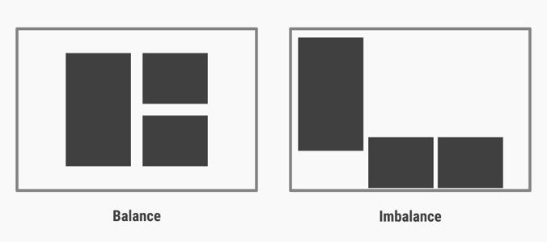

Likhet i brukergrensesnitt:
Hvis like elementer grupperes blir det mye mer oversiktelig for brukeren, det blir mye lettere å finne fram og skille ting, rett og slett mer brukervennelig. Likhet gir tydelig og fast (gjennomført) struktur.
kontinuitet-struktur:
kontinuitet betyr at noe har en ubrutt sammenheng, det vil si at noe er det samme heleveien ut. I sammenheng med webdesign og strukturvil det si at strukturen på nettsiden er den samme på alle sider, noe som gjør siden mye lettere å lære og mye mer brukervennelig
Forenkling:
Forenkling vil rett og slett si ikke overkompliser noe, hold det så simpelt som mulig. Man må tenke på universell utforming og brukergrensesintt. Ikke alle er like gode med maskiner, eller har like godt syn eller andre sanser, det er derfor viktig å skulle holde seg til det simple når det kommer til design. overkompliserer man kan det fort føre til at siden ikke blir brukervennelig/overkomplisert
Form, fargen, tegning
Form-ulike virkemiddel
Balanse. Oppfatning av at elementene på en side holder seg på plass. En ubalansert side gir leseren et inntrykk av at enkelte elementer faller eller forsvinner bort. Nedenfor ser man et eksempel på en siden som er balanser mot en som ikke er det.

Dominans-et fremhever element. En sude hvor absolutt alle elementer er like store, har like farger, og er plassert under hverandre oppfattes som kjedelig. man må derfor ha litt kontrast på noen ting, som for eksempel nav-baren er det greit med litt kontrast for å skille den ut fra vanlig tekst.
Bildebruk. Et bilde sier mer enn tusen ord, men det er viktig at bildet kommuniserer riktig budskap. Riktig bilde til riktig kontekst.
- Bilder kan skape stemninger
-natur vs industri. Mennesker i ulike settinger
- Bilder kan informere og forenkle
-illustrasjon av arbeidsprosessen, bilder fra arbeidsplassen, arbeidstegninger, modeller, diagram
Skrifttyper og typografi:
Når det kommer til Skrifttyper så er det lurt å velge noen websikre Skrifttyper, Georgia og verdana er eksempler på Skrifttyper som er skap for å vises på skjerm.
Farge
Farge er med på å skape stemning, varme farger gir et annet inntrykk en kalde farger.
- Primærfarger: rød, grønn, blå
- sekundærfarger: blanding av to primærfarger
- Tertiærfarger: blanding av to nærliggende farger
En god inspirasjonskilde for å finne farge å bruker er naturen. Naturen er full av farger som matcher, vanskelig å finne et landskapsbilde hvor fargene ikke matcher.
Tegning
Når man skal lage et nytt nettsted får man all informasjonen man trenger før man begynner å lage den. Mye av informasjonen man før kan man bruke til å skisse hvordan man ønsker at nettstedet skal se ut(Wireframes) Mer om wireframes kommer det litt nedenfor.
Innhold:
- Navn på elementer
- Størrelse, farge på elementer, marg, ramme mm.
- Bildeinformasjon
- Linker
- Navigasjon
- Skrifttyper
- Spesielle egenskaper
Eks: «Menyen skifter farge på :hover og :active»
Wireframes
Wireframes er en mellomting mellom grovskisse og photoshoppa design. Det brukes til å skisse ut hvordan man ønsker at nettsiden skal se ut. Innholde man må ha med i skissen er:
- Plassering av elementer
- Intraksjon-vise hva som er klikkbart, skjema mm.
- Tekst-Angi headingnivå, paragraf, helst font og størrelse
Hvorfor wireframes?
- Muliggjør testing av siden
- «Ser du hva formålet med siden er?»
- «Hvor kan du klikke?»
- «Hva er det viktigste elementet på siden?»
- Kostnadseffektivt. Enklere å endre skisser enn kode
- Visualiserer arbeidsflyt på nettstedet
- Skjerm B følger skjerm A. Etter dette ser man dette
- Viktig spesielt for små skjermer med begrenset plass